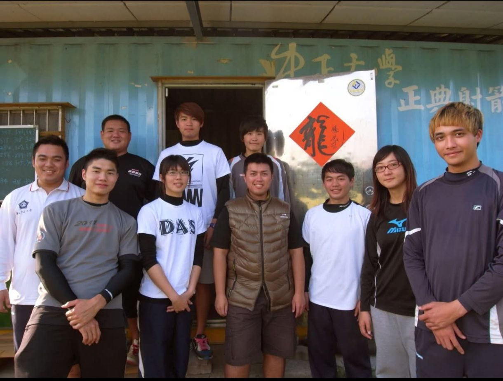
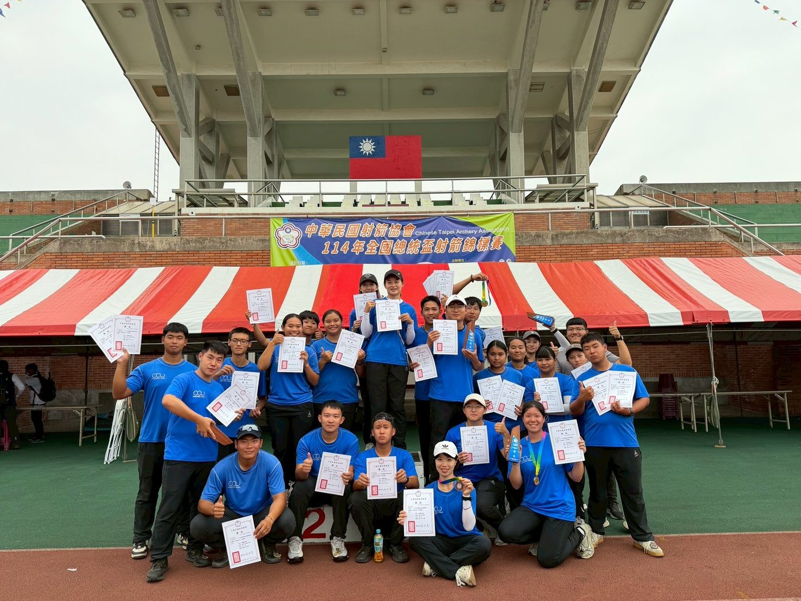

01我的故事
國立中正大學射箭隊自約十五年前成立以來，始終秉持著推廣射箭運動與培育優秀選手的精神。創隊初期，隊上人數有限，器材與資源亦相當不足，但在教練和選手的努力與堅持下，逐步奠定了穩固的基礎。


推薦理由
雖然中正大學射箭隊位於偏遠地區，發展過程充滿挑戰，但我們始終保持跨足國際賽事的熱情與決心。隊上選手在日常訓練中紮實打好基礎，不僅提升了團隊的凝聚力與競爭力，也在全國賽事中屢屢展現亮眼成績。我們的目標不僅止於國內，更能在亞錦賽、世大運等國際舞台上嶄露頭角。從無到有的發展歷程，正是中正大學射箭隊堅毅精神與韌性的最佳象徵。
然而，射箭運動所需的器材及訓練經費相當龐大，單靠隊伍本身的力量仍有不足。我們誠摯地希望能獲得您的支持與贊助，讓更多選手能安心訓練、持續挑戰自我，並為校爭光，在國內外舞台上展現中正大學射箭隊的實力與風采。